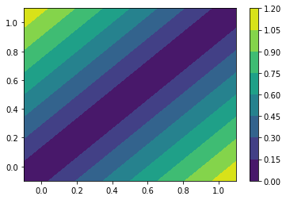
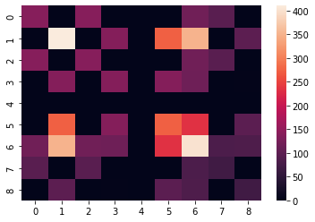
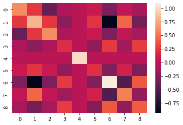
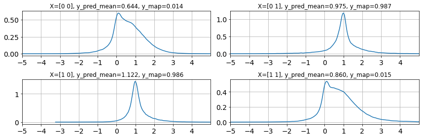
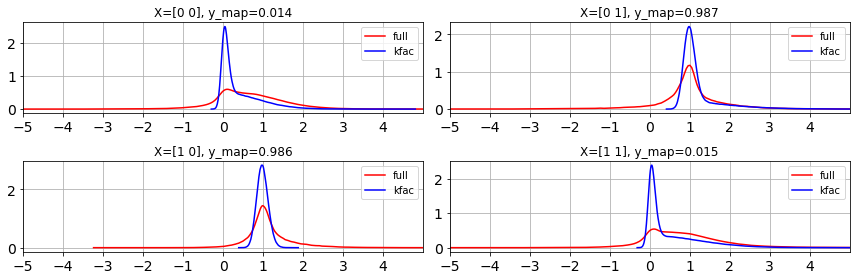
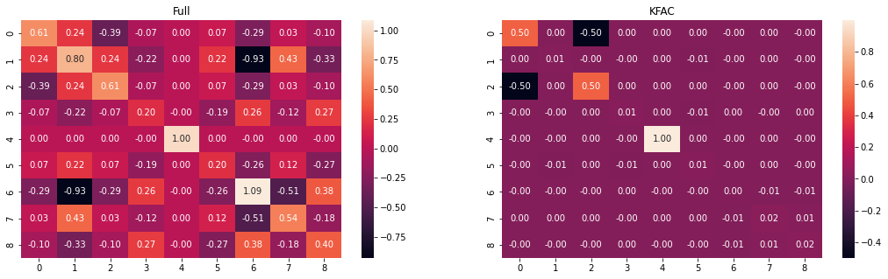
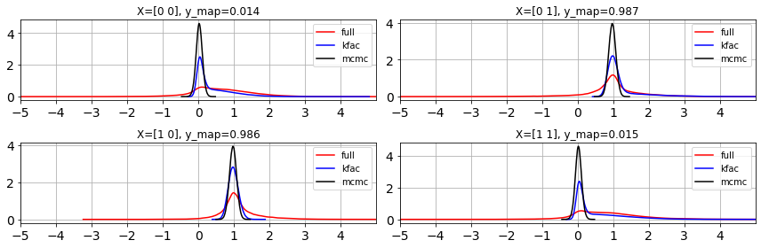
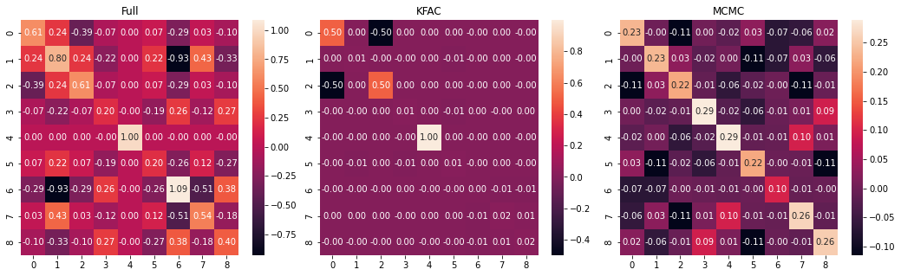

from math import prod
from functools import partial
from time import time
import blackjax
import flax.linen as nn
import jax
from jax.flatten_util import ravel_pytree
import jax.tree_util as jtu
import jax.numpy as jnp
# jnp.set_printoptions(linewidth=2000)
import optax
from tqdm import trange
import arviz as az
import seaborn as sns
import matplotlib.pyplot as plt
jax.config.update("jax_enable_x64", False)
%reload_ext watermarkSome helper functions:
jitter = 1e-6
def get_shapes(params):
return jtu.tree_map(lambda x:x.shape, params)
def svd_inverse(matrix):
U, S, V = jnp.linalg.svd(matrix+jnp.eye(matrix.shape[0])*jitter)
return V.T/S@U.TDataset
We take XOR dataset to begin with:
X = jnp.array([[0, 0], [0, 1], [1, 0], [1, 1]])
y = jnp.array([0, 1, 1, 0])
X.shape, y.shapeWARNING:absl:No GPU/TPU found, falling back to CPU. (Set TF_CPP_MIN_LOG_LEVEL=0 and rerun for more info.)((4, 2), (4,))NN model
class MLP(nn.Module):
features: []
@nn.compact
def __call__(self, x):
for n_features in self.features[:-1]:
x = nn.Dense(n_features, kernel_init=jax.nn.initializers.glorot_normal(), bias_init=jax.nn.initializers.normal())(x)
x = nn.relu(x)
x = nn.Dense(features[-1])(x)
return x.ravel()Let us initialize the weights of NN and inspect shapes of the parameters:
features = [2, 1]
key = jax.random.PRNGKey(0)
model = MLP(features)
params = model.init(key, X).unfreeze()
get_shapes(params){'params': {'Dense_0': {'bias': (2,), 'kernel': (2, 2)},
'Dense_1': {'bias': (1,), 'kernel': (2, 1)}}}model.apply(params, X)DeviceArray([ 0.00687164, -0.01380461, 0. , 0. ], dtype=float32)Negative Log Joint
noise_var = 0.1
def neg_log_joint(params):
y_pred = model.apply(params, X)
flat_params = ravel_pytree(params)[0]
log_prior = jax.scipy.stats.norm.logpdf(flat_params).sum()
log_likelihood = jax.scipy.stats.norm.logpdf(y, loc=y_pred, scale=noise_var).sum()
return -(log_prior + log_likelihood)Testing if it works:
neg_log_joint(params)DeviceArray(105.03511, dtype=float32)Find MAP
key = jax.random.PRNGKey(0)
params = model.init(key, X).unfreeze()
n_iters = 1000
value_and_grad_fn = jax.jit(jax.value_and_grad(neg_log_joint))
opt = optax.adam(0.01)
state = opt.init(params)
def one_step(params_and_state, xs):
params, state = params_and_state
loss, grads = value_and_grad_fn(params)
updates, state = opt.update(grads, state)
params = optax.apply_updates(params, updates)
return (params, state), loss
(params, state), losses = jax.lax.scan(one_step, init=(params, state), xs=None, length=n_iters)
plt.plot(losses);
y_map = model.apply(params, X)
y_mapDeviceArray([0.01383345, 0.98666817, 0.98563665, 0.01507111], dtype=float32)x = jnp.linspace(-0.1,1.1,100)
X1, X2 = jnp.meshgrid(x, x)
def predict_fn(x1, x2):
return model.apply(params, jnp.array([x1,x2]).reshape(1,2))
predict_fn_vec = jax.jit(jax.vmap(jax.vmap(predict_fn)))
Z = predict_fn_vec(X1, X2).squeeze()
plt.contourf(X1, X2, Z)
plt.colorbar();
Full Hessian Laplace
flat_params, unravel_fn = ravel_pytree(params)
def neg_log_joint_flat(flat_params):
return neg_log_joint(unravel_fn(flat_params))
H = jax.hessian(neg_log_joint_flat)(flat_params)
sns.heatmap(H);
posterior_cov = svd_inverse(H)
sns.heatmap(posterior_cov);
Note that we can sample parameters from the posterior and revert them to correct structure with the unravel_fn. Here is a class to do it all:
class FullHessianLaplace:
def __init__(self, map_params, model):
flat_params, self.unravel_fn = ravel_pytree(map_params)
def neg_log_joint_flat(flat_params):
params = unravel_fn(flat_params)
return neg_log_joint(params)
self.H = jax.hessian(neg_log_joint_flat)(flat_params)
self.mean = flat_params
self.cov = svd_inverse(self.H)
self.model = model
def _vectorize(self, f, seed, shape, f_kwargs={}):
length = prod(shape)
seeds = jax.random.split(seed, num=length).reshape(shape+(2,))
sample_fn = partial(f, **f_kwargs)
for _ in shape:
sample_fn = jax.vmap(sample_fn)
return sample_fn(seed=seeds)
def _sample(self, seed):
sample = jax.random.multivariate_normal(seed, mean=self.mean, cov=self.cov)
return self.unravel_fn(sample)
def sample(self, seed, shape):
return self._vectorize(self._sample, seed, shape)
def _predict(self, X, seed):
sample = self._sample(seed)
return self.model.apply(sample, X)
def predict(self, X, seed, shape):
return self._vectorize(self._predict, seed, shape, {'X': X})Estimating predictive posterior
posterior = FullHessianLaplace(params, model)
seed = jax.random.PRNGKey(1)
n_samples = 100000
y_pred_full = posterior.predict(X, seed=seed, shape=(n_samples,))
ulim = 5
llim = -5
fig, ax = plt.subplots(2,2,figsize=(12,4))
ax=ax.ravel()
for i in range(len(y)):
az.plot_dist(y_pred_full[:, i], ax=ax[i]);
ax[i].grid(True)
ax[i].set_xticks(range(llim,ulim))
ax[i].set_xlim(llim, ulim)
ax[i].set_title(f"X={X[i]}, y_pred_mean={y_pred_full[:, i].mean():.3f}, y_map={y_map[i]:.3f}")
fig.tight_layout()
KFAC-Laplace
We need to invert partial Hessians to do KFAC-Laplace. We can use tree_flatten with ravel_pytree to ease the workflow. We need to: 1. pick up partial Hessians in pure matrix form to be able to invert them. 2. Create layer-wise distributions and sample them. These samples will be 1d arrays. 3. We need to convert those 1d arrays to params dictionary form so that we can plug it into the flax model and get posterior predictions.
First we need to segregate the parameters layer-wise. We will use is_leaf condition to stop traversing the parameter PyTree at a perticular depth. See how it is different from vanilla tree_flatten:
flat_params, tree_def = jtu.tree_flatten(params)
display(flat_params, tree_def)[DeviceArray([-0.00024913, 0.00027019], dtype=float32),
DeviceArray([[ 0.8275324 , -0.8314813 ],
[-0.8276633 , 0.83254045]], dtype=float32),
DeviceArray([0.01351773], dtype=float32),
DeviceArray([[1.1750739],
[1.1685134]], dtype=float32)]PyTreeDef({'params': {'Dense_0': {'bias': *, 'kernel': *}, 'Dense_1': {'bias': *, 'kernel': *}}})is_leaf = lambda param: 'bias' in param
layers, tree_def = jtu.tree_flatten(params, is_leaf=is_leaf)
display(layers, tree_def)[{'bias': DeviceArray([-0.00024913, 0.00027019], dtype=float32),
'kernel': DeviceArray([[ 0.8275324 , -0.8314813 ],
[-0.8276633 , 0.83254045]], dtype=float32)},
{'bias': DeviceArray([0.01351773], dtype=float32),
'kernel': DeviceArray([[1.1750739],
[1.1685134]], dtype=float32)}]PyTreeDef({'params': {'Dense_0': *, 'Dense_1': *}})The difference is clearly evident. Now, we need to flatten the inner dictionaries to get 1d arrays.
flat_params = list(map(lambda x: ravel_pytree(x)[0], layers))
unravel_fn_list = list(map(lambda x: ravel_pytree(x)[1], layers))
display(flat_params, unravel_fn_list)[DeviceArray([-2.4912864e-04, 2.7019347e-04, 8.2753241e-01,
-8.3148128e-01, -8.2766330e-01, 8.3254045e-01], dtype=float32),
DeviceArray([0.01351773, 1.1750739 , 1.1685134 ], dtype=float32)][<function jax._src.flatten_util.ravel_pytree.<locals>.<lambda>(flat)>,
<function jax._src.flatten_util.ravel_pytree.<locals>.<lambda>(flat)>]def modified_neg_log_joint_fn(flat_params):
layers = jtu.tree_map(lambda unravel_fn, flat_param: unravel_fn(flat_param), unravel_fn_list, flat_params)
params = tree_def.unflatten(layers)
return neg_log_joint(params)
full_hessian = jax.hessian(modified_neg_log_joint_fn)(flat_params)
# Pick diagonal entries from the Hessian
useful_hessians = [full_hessian[i][i] for i in range(len(full_hessian))]
useful_hessians[DeviceArray([[139.07985, 0. , 138.07985, 0. , 0. ,
0. ],
[ 0. , 410.62708, 0. , 136.54236, 0. ,
273.08472],
[138.07985, 0. , 139.07985, 0. , 0. ,
0. ],
[ 0. , 136.54236, 0. , 137.54236, 0. ,
136.54236],
[ 0. , 0. , 0. , 0. , 1. ,
0. ],
[ 0. , 273.08472, 0. , 136.54236, 0. ,
274.08472]], dtype=float32),
DeviceArray([[400.99997, 82.72832, 83.44101],
[ 82.72832, 69.43975, 0. ],
[ 83.44101, 0. , 70.35754]], dtype=float32)]Each entry in above list corresponds to layer-wise hessian matrices. Now, we need to create layer-wise distributions, sample from them and reconstruct params using the similar tricks we used above:
class KFACHessianLaplace:
def __init__(self, map_params, model):
self.model = model
layers, self.tree_def = jtu.tree_flatten(map_params, is_leaf=lambda x: 'bias' in x)
flat_layers = [ravel_pytree(layer) for layer in layers]
self.means = list(map(lambda x: x[0], flat_layers))
self.unravel_fn_list = list(map(lambda x: x[1], flat_layers))
def neg_log_joint_flat(flat_params):
flat_layers = [self.unravel_fn_list[i](flat_params[i]) for i in range(len(flat_params))]
params = self.tree_def.unflatten(flat_layers)
return neg_log_joint(params)
self.H = jax.hessian(neg_log_joint_flat)(self.means)
self.useful_H = [self.H[i][i] for i in range(len(self.H))]
self.covs = [svd_inverse(matrix) for matrix in self.useful_H]
def _vectorize(self, f, seed, shape, f_kwargs={}):
length = prod(shape)
seeds = jax.random.split(seed, num=length).reshape(shape+(2,))
sample_fn = partial(f, **f_kwargs)
for _ in shape:
sample_fn = jax.vmap(sample_fn)
return sample_fn(seed=seeds)
def _sample_partial(self, seed, unravel_fn, mean, cov):
sample = jax.random.multivariate_normal(seed, mean=mean, cov=cov)
return unravel_fn(sample)
def _sample(self, seed):
seeds = [seed for seed in jax.random.split(seed, num=len(self.means))]
flat_sample = jtu.tree_map(self._sample_partial, seeds, self.unravel_fn_list, self.means, self.covs)
sample = self.tree_def.unflatten(flat_sample)
return sample
def sample(self, seed, n_samples=1):
return self._vectorize(self._sample, seed, shape)
def _predict(self, X, seed):
sample = self._sample(seed)
return self.model.apply(sample, X)
def predict(self, X, seed, shape):
return self._vectorize(self._predict, seed, shape, {'X': X})Estimating predictive posterior
kfac_posterior = KFACHessianLaplace(params, model)
seed = jax.random.PRNGKey(1)
n_samples = 1000000
y_pred_kfac = kfac_posterior.predict(X, seed=seed, shape=(n_samples, ))
ulim = 5
llim = -5
fig, ax = plt.subplots(2,2,figsize=(12,4))
ax=ax.ravel()
for i in range(len(y)):
az.plot_dist(y_pred_full[:, i], ax=ax[i], label='full', color='r')
az.plot_dist(y_pred_kfac[:, i], ax=ax[i], label='kfac', color='b')
ax[i].grid(True)
ax[i].set_xticks(range(llim,ulim))
ax[i].set_xlim(llim, ulim)
ax[i].set_title(f"X={X[i]}, y_map={y_map[i]:.3f}")
fig.tight_layout()
We can see that KFAC is approximating the trend of Full Hessian Laplace. We can visualize the Covariance matrices as below.
fig, ax = plt.subplots(1,2,figsize=(18,5))
sns.heatmap(posterior.cov, ax=ax[0], annot=True, fmt = '.2f')
ax[0].set_title('Full')
kfac_cov = posterior.cov * 0
offset = 0
for cov in kfac_posterior.covs:
length = cov.shape[0]
kfac_cov = kfac_cov.at[offset:offset+length, offset:offset+length].set(cov)
offset += length
sns.heatmap(kfac_cov, ax=ax[1], annot=True, fmt = '.2f')
ax[1].set_title('KFAC');
Comparison with MCMC
Inspired from a blackjax docs example.
key = jax.random.PRNGKey(0)
warmup_key, inference_key = jax.random.split(key, 2)
num_warmup = 5000
num_samples = n_samples
initial_position = model.init(key, X)
def logprob(params):
return -neg_log_joint(params)
def inference_loop(rng_key, kernel, initial_state, num_samples):
def one_step(state, rng_key):
state, _ = kernel(rng_key, state)
return state, state
keys = jax.random.split(rng_key, num_samples)
_, states = jax.lax.scan(one_step, initial_state, keys)
return states
init = time()
adapt = blackjax.window_adaptation(blackjax.nuts, logprob, num_warmup)
final_state, kernel, _ = adapt.run(warmup_key, initial_position)
states = inference_loop(inference_key, kernel, final_state, num_samples)
samples = states.position.unfreeze()
print(f"Sampled {n_samples} samples in {time()-init:.2f} seconds")Sampled 1000000 samples in 27.85 secondsy_pred_mcmc = jax.vmap(model.apply, in_axes=(0, None))(samples, X)
ulim = 5
llim = -5
fig, ax = plt.subplots(2,2,figsize=(12,4))
ax=ax.ravel()
for i in range(len(y)):
az.plot_dist(y_pred_full[:, i], ax=ax[i], label='full', color='r')
az.plot_dist(y_pred_kfac[:, i], ax=ax[i], label='kfac', color='b')
az.plot_dist(y_pred_mcmc[:, i], ax=ax[i], label='mcmc', color='k')
ax[i].grid(True)
ax[i].set_xticks(range(llim,ulim))
ax[i].set_xlim(llim, ulim)
ax[i].set_title(f"X={X[i]}, y_map={y_map[i]:.3f}")
fig.tight_layout()
fig, ax = plt.subplots(1,3,figsize=(18,5))
fig.subplots_adjust(wspace=0.1)
sns.heatmap(posterior.cov, ax=ax[0], annot=True, fmt = '.2f')
ax[0].set_title('Full')
kfac_cov = posterior.cov * 0
offset = 0
for cov in kfac_posterior.covs:
length = cov.shape[0]
kfac_cov = kfac_cov.at[offset:offset+length, offset:offset+length].set(cov)
offset += length
sns.heatmap(kfac_cov, ax=ax[1], annot=True, fmt = '.2f')
ax[1].set_title('KFAC');
mcmc_cov = jnp.cov(jax.vmap(lambda x: ravel_pytree(x)[0])(samples).T)
sns.heatmap(mcmc_cov, ax=ax[2], annot=True, fmt = '.2f')
ax[2].set_title('MCMC');
Library versions
%watermark --iversionsflax : 0.6.1
blackjax : 0.8.2
optax : 0.1.3
matplotlib: 3.5.1
jax : 0.3.23
arviz : 0.12.1
seaborn : 0.11.2
json : 2.0.9